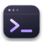

Luma'ya hoş geldin

nova@luma: ~DEMOnova@luma ~
$ hello
Bir şeyler üretmek için güzel bir gün.
Demo komutlarını görmek için help yaz.
$ hello
Bir şeyler üretmek için güzel bir gün.
Demo komutlarını görmek için help yaz.

nova@luma: ~DEMO